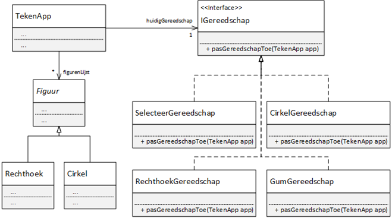

Les 13 - Voorbereiding (V13)
Theorie
Screencast over onderwerp 10: Interfaces
http://www.youtube.com/playlist?list=PLpd9jJvk1PjnR8YVs3ZsZtJoGbtJLSUV_
Boek
Hoofdstuk 12
12.6 t/m 12.9 pagina 458 t/m 469
Opgave V13.1 - Het woord Interface
Bij het maken van (objectgeörienteerde) programma's komt de term "interface" geregeld voorbij. Geef drie mogelijke betekenissen van het woord "interface".
Opgave V13.2 - Meerdere interfaces implementeren
Zoals in de screencast wordt verteld, is het in Java niet toegestaan om van meerdere klasses te erven ("multiple inheritance" bestaat in Java niet), maar mag je wel meerdere interfaces implementeren en daarnaast zelfs nog van een klasse erven. Waarom is multiple inheritance wel een probleem, maar het implementeren van meerdere interfaces niet?
Opgave V13.3 - Van if-else naar Interface
Gegeven een applicatie waarmee rechthoeken en cirkels getekend geplaatst en verwijderd kunnen worden.
import java.util.ArrayList;
import processing.core.PApplet;
public class TekenApp extends PApplet {
public static void main(String[] args) {
PApplet.main("week5.ifelsenaarinterface.TekenApp");
}
private ArrayList<Figuur> figurenLijst = new ArrayList<>();
private String huidigGereedschap = "selecteer";
public void settings() {
size(400, 400);
}
public void draw() {
background(0);
for (Figuur figuur : figurenLijst) {
figuur.teken(this);
}
}
public void mousePressed() {
switch (huidigGereedschap) {
case "selecteer":
System.out.println("s");
break;
case "rechthoek":
Rechthoek r = new Rechthoek( mouseX, mouseY, 50, 50);
figurenLijst.add(r);
break;
case "cirkel":
Cirkel c = new Cirkel(mouseX, mouseY, 50);
figurenLijst.add(c);
break;
case "gum":
for (int i = figurenLijst.size() - 1; i >= 0; i--) {
Figuur fig = figurenLijst.get(i);
if (fig.isMuisBinnen(mouseX, mouseY)) {
figurenLijst.remove(i);
}
}
break;
}
}
public void keyReleased() {
switch (key) {
case 's':
huidigGereedschap = "selecteer";
break;
case 'r':
huidigGereedschap = "rechthoek";
break;
case 'c':
huidigGereedschap = "cirkel";
break;
case 'g':
huidigGereedschap = "gum";
break;
}
}
}
Hoewel deze code werkt, is het uitbreiden ervan lastig. Het probleem zit hem in het switch-statement in de methode mousePressed().
Zodra er een nieuw gereedschap toegevoegd moet worden, moet het gedrag van dit gereedschap toegevoegd worden op een onoverzichtelijk plek. Daarnaast moet de naam van dit gereedschap op meerdere plekken gebruikt, zonder dat de compiler kan controleren of die naam goed geschreven is.
In deze opgave ga je met behulp van een interface dit switch-statement wegwerken.
V13.3 A
Hieronder is een klassendiagram te zien waarin een oplossing geboden wordt. Schrijf de code voor de interface IGereedschap en voor alle gereedschappen die deze interface implementeren. Verplaatst de code uit de mousePressed naar de juiste klassen.

V13.3 B
Verander in het hoofdprogramma de code uit keyReleased() en mousPressed zodanig dat er optimaal gebruik wordt gemaakt van alle gereedschapsklassen.
Als het goed is bestaat de code in mousePressed() na aanpassing uit slechts één regel. Overigens hoef je het switch-statement uit keyReleased() alleen aan te passen. Weg werken van dit statement is niet nodig